文字
背景
行間

_
令和元年球技大会
９月１２日（木）球技大会を開催しました。
先日の台風や、前日の雷雨の影響でクラウンドコンディションが心配されましたが、無事に予定通り実施することができました。
まだ停電や断水で辛い思いをしている生徒もいますが、「球技大会」というクラスで一致団結する行事を通して、少しでも元気になってもらえればと思います。
試合では嬉しい涙を流した生徒と悔しい涙を流した生徒がいます。勝利を目指して一生懸命頑張ったり、プレーの一つ一つで喜びを分かち合ったりという姿をたくさん見ることができました。「負けちゃったけど楽しかった！」、「なんとか１点取れた！」などの声もたくさん聞くことができました。このような生徒たちの姿を見ると、勝ち負けよりも大事なことがあるということに気付かされます。
３年生は最後の球技大会、本当にお疲れ様でした。特に開会式や閉会式の運営に携わった体育委員の皆さん、ありがとうございました。
１、２年生はまだ来年があります。クラスは替わるかもしれませんが、力を合わせて頑張りましょう！今日のチームメイトが来年のライバルになるかもしれません。そのときはお互いに競いあって、充実した試合ができることを期待しています。（体育主任 岡田）
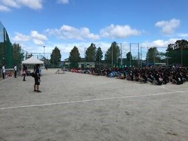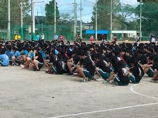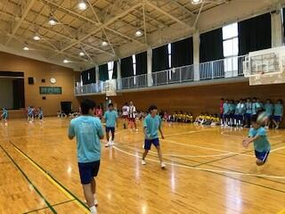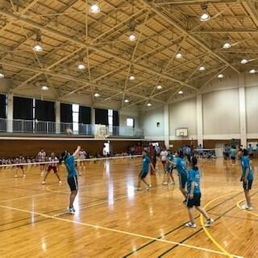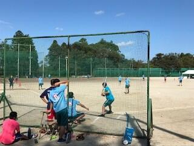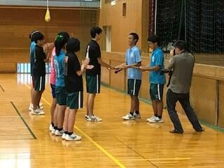
千葉県立佐倉高等学校体育委員会令和元年球技大会結果一覧
| 男子バレーボール | 女子バレーボール |
| 優 勝 ３年Ｆ組a | 優 勝 ３年Ⅾ組 |
| 第２位 ２年Ｃ組a | 第２位 １年Ｂ組 |
| 第３位 ３年Ｃ組 １年Ｈ組 | 第３位 ３年Ａ組a １年Ｃ組 |
| 男子サッカー | 女子サッカー |
| 優 勝 ３年Ｈ組a ２年Ｆ組ｂ | 優 勝 １年Ｇ組 |
| 第３位 ３年Ｅ組b ２年Ｅ組ｂ | 第２位 ３年Ｃ組a |
| ※規定により２クラス優勝 | 第３位 ３年Ｄ組 ２年Ｆ組a |
| ソフトボール | ドッジボール |
| 優 勝 ３年Ｄ組 | 優 勝 ３年Ｅ組 |
| 第２位 ３年Ｃ組 | 第２位 ２年Ｃ組b |
| 第３位 ２年Ｂ組a 1年Ｈ組 | 第３位 ２年Ａ組 １年Ｄ組 |
ようこそ先輩


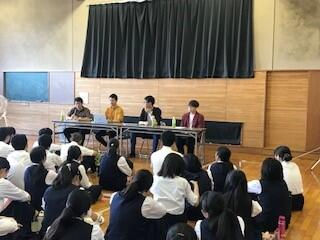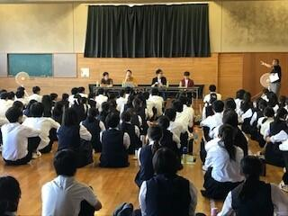
2学年総合的な学習の時間
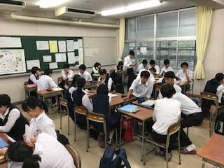

1学年総合的な探究の時間
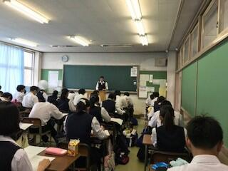

3年生センター試験説明会


 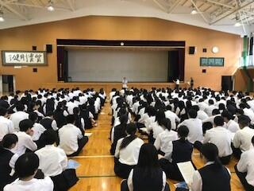
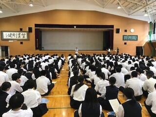 SSH高大接続枠プレ課題研究講座について


佐倉市非常登庁訓練（防災訓練）について
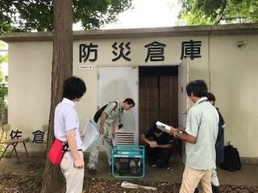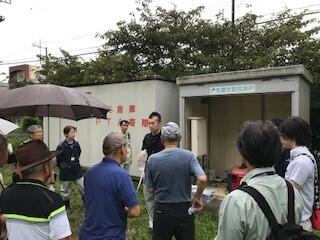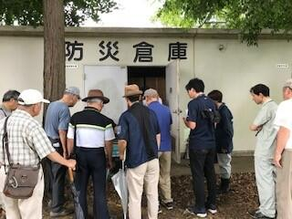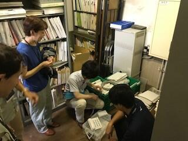
英語ディベート大会優勝
この大会は、全国英語ディベート連盟の流れに従い、論題について肯定側と否定側に分かれ、以下の4つのステップを経て、ジャッジが「どちらがより説得力があるか」を判定します。
① 立論 肯定側はメリットを、否定側はデメリットとなる点を説明する。
② アタック 相手の立論に対し、反論する。
③ ディフェンス 相手の反論に対し、再反論し、立論を立て直す。
④ 要約 総括し、主張が成り立つことをアピールする。
もちろん、試合中すべてのやりとりは英語で行われます。事前に準備しても、ただ原稿を読むだけでは試合は成立しません。相手の述べている内容を理解し、そのことについて反論するという即興での対応も求められます。このことから、これから求められる英語力の向上に大きく役立つと言われています。
今回の論題：
That the Japanese government should limit the weekly maximum averageworking hours, including overtime, to 48 hours. (following the E.U.)
<日本国は、残業も含めた週あたりの最長平均労働時間を(E.U.にならい）48時間に制限すべきである。是か非か。>
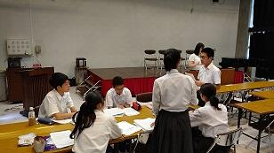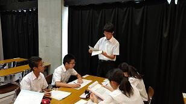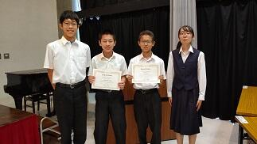

科学の甲子園Jr研修会
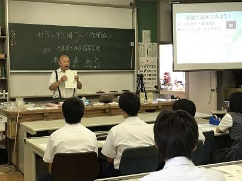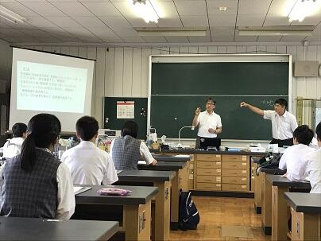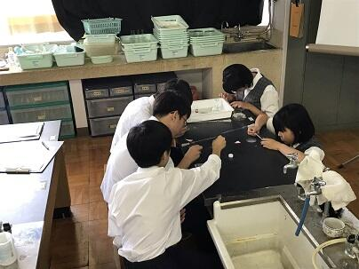
サーバメンテナンスにともなう閲覧サービス停止の終了について
県ウェブページのサーバメンテナンスのために本校Webページが
8/10(土) 9：00 ～ 8/18(日) 23:00 の期間中、一時的に閲覧できなくなることがあり,ご迷惑をおかけしましたが、メンテナンスが無事終了しましたので、通常どおり閲覧が可能となりました。
これからも皆さんに学校の様子をわかりやすく発信してまいりますので、本校Webページをお楽しみください。
児童・生徒の理科離れ対策事業 令和元年度 小学校初任者研修
午前は試薬の調整と中和、顕微鏡の使い方、午後は実験操作の基本と安全指導、模擬授業を通しての安全指導、サテライト研究員との意見交換などが行われました。


 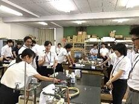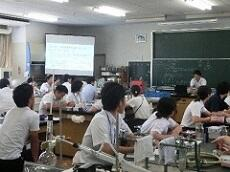
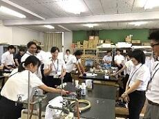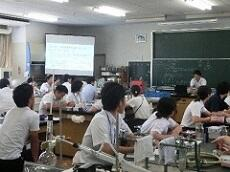

学校説明会その２
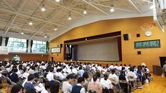

学校説明会その１
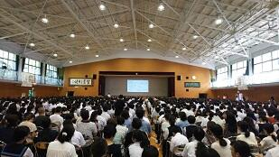
8月6日の学校説明会参加予定の中学生・保護者の皆様へ
説明会当日も、かなり気温が高くなることが予想されます。体育館には、空調設備はございません。暑さ対策として、お飲み物をお持ちくださいますようお願いいたします。また、服装も軽装で結構です。扇子や団扇もお持ちいただいてもよろしいかと存じます。また、近隣の商業施設等への駐車はご遠慮くださいますようお願い申し上げます。どうぞよろしくお願いいたします。
工芸部 全国高等学校総合文化祭


 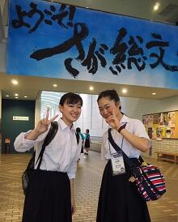
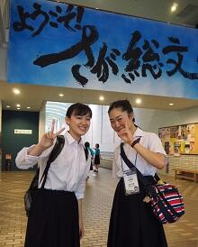夏季休業前全校集会


 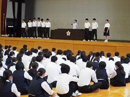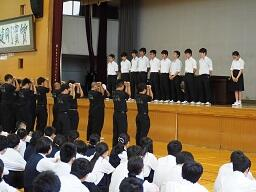
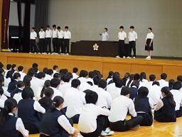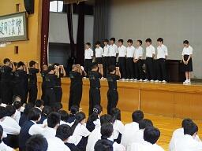 教職員_不祥事防止研修


緑の募金活動（JRC同好会）

今日７月11日、JRC同好会の皆さんが、市内や全国の緑化に使われる「緑の募金」の募金活動を通学時間帯にあわせて、西門付近で行いました。国では昭和25年以来「緑の羽根募金」運動が進められてきましたが、平成7年に戦後50年を契機として「緑の募金法」が制定され、「緑の募金」を通じたボランティアによる森林づくりが国内はもとより地球規模で進められています。企業、地域、学校、職場から善意の寄付を募り、森林ボランティアやNPOなどを通じて国内外の森林づくりや人づくりをはじめとした様々な取り組みを行っている活動です。本校でのJRC同好会の皆さんによる募金活動は、明日も行われる予定です。 → 募金結果については>>続きを読むをクリックしてください。
野球応援練習


いよいよ明日７月10日から第101回全国高校野球選手権千葉大会の熱戦が各地で始まります。本校野球部の初戦は、来る７月13日（土）11:30からナスパスタジアムで行われる予定です。相手は、小見川高校と流通経済大学付属柏高校の試合の勝者となります。今日は、応援委員会と吹奏楽部による野球応援の合同練習が第１グラウンドで行われました。顧問の先生方や野球部の保護者の方々が見守るなか応援練習が行われました。仲間を応援する熱い気持ちが選手だけでなくその場にいるすべての人たちに伝わるすばらしい応援練習だったっと思います。皆さま、７月13日の応援よろしくお願いいたします。
生徒会役員選挙


 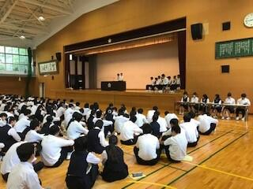
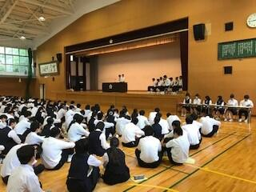 児童・生徒の理科離れ対策事業 第2回サテライト研究員会議
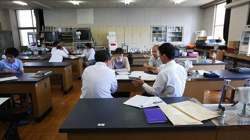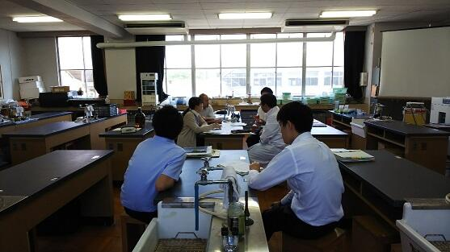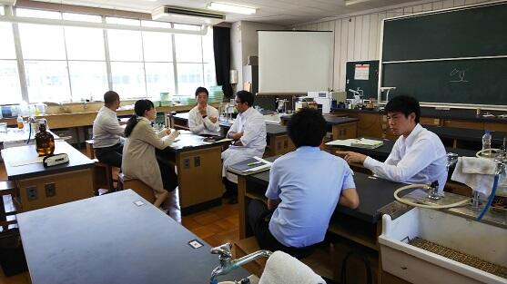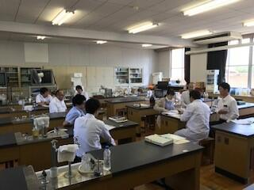
地域交流懇談会（1,000か所ミニ集会）


鍋山祭表彰式
音楽部の美しい合唱に始まり、ダンス同好会のダンスで盛り上がりました。受賞団体は以下の通りです。
鍋 山 大 賞 ３年Ｂ組 「ピーターパン」
お 化 け 屋 敷 大 賞 ３年Ｇ組 「ＢＩＯＧＥＥＤ」
飲 食 ・ 販 売 部 門 ２年Ｇ組 「千と千尋の担々麺」
アトラクション部門 １年Ａ組 「1t’s A funny world」
装 飾 賞 １年Ｄ組 「Finding Monster」
２年Ｇ組 「千と千尋の担々麺」
３年Ｃ組 「アナと雪の女王」
部活動・同好会大賞 吹奏楽部 「ミニコンサート」
部活動・同好会 展示・企画部門賞
工芸・華道・写真部 「四字熟語じゃおさまりきらない愉快な仲間たちのおうち」
校長特別賞 茶道部 「日日是茶会 －利休が教えてくれた最高のしあわせ－」
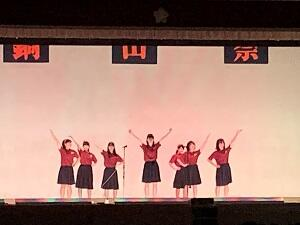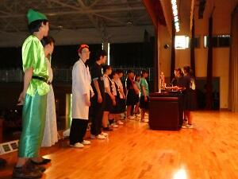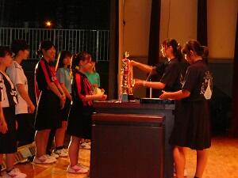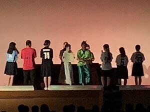
併せて、体育祭の表彰も行われました。
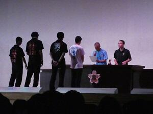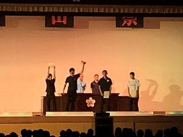
鍋山祭（一般公開日）について
今日６月22日は、鍋山祭（本校の文化祭）の一般公開日です。公開時間は９：００から１４:３０です。皆さんのご来場をお待ちしています。
＜17:30 加筆＞
本日、鍋山祭にご来場いただいた皆様、また関係者の皆様に心より感謝申し上げます。鍋山祭はいかがでしたか。皆様のご理解ご支援ご協力のお陰で今年の鍋山祭も大成功のうちに終了することができました。反省点については来年度以降に生かして行きたいと思います。
また、今後も本校生徒がいろいろな場面で活躍する姿を皆様にお見せする機会があると思います。その時にはまた、皆様とお目にかかれることを楽しみにしています。今後ともよろしくお願い申し上げます。
転入学試験
令和元年度 転（・編）入学試験の受験要項を掲載しました。
入学案内 のページからご覧いただけます。
台北市中正高級中学校来校
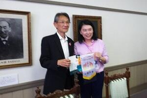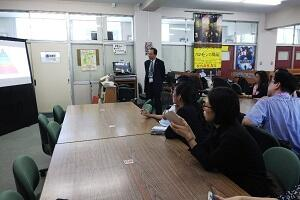
佐倉図書館新町複合施設に関するワークショップについて
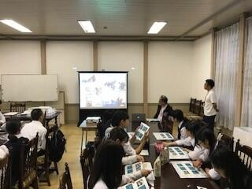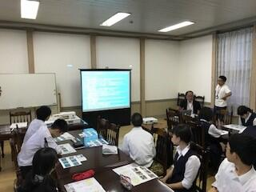
 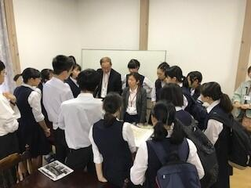
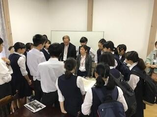 生徒総会・賞状伝達式・カヌー部壮行会
６月４日午後体育館にて生徒総会・賞状伝達式・カヌー部壮行会が行われました。
生徒総会では、前年度の活動報告・決算、今年度の活動予定や予算審議が行われ議事が滞りなく終了しました。生徒からの要望も可決され、学校に伝えられることになりました。その後、賞状伝達（カヌー部、弓道部、将棋部）が行われました。最後に関東大会に出場するカヌー部に対して壮行会が行われ、応援団から熱いエールが送られました。
（祝カヌー部関東大会・インターハイ出場決定！）
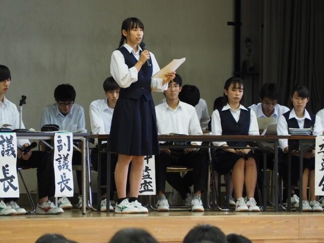
 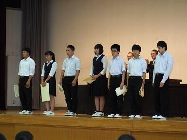
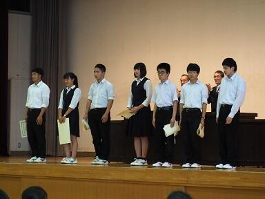 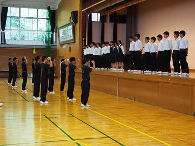
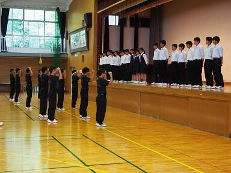
鍋山祭のポスターが完成しました

美術部と書道部にご協力いただき、鍋山祭（文化祭）のポスターが完成しました。
今年のテーマは
『桜花爛漫 ～咲き誇れ、佐倉の華～』
一般公開は６月２２日（土）9:00 ～14：30です。
ご来校をお待ちしております。
事前申し込みは不要です。
ご来校の際は上履きをご持参ください。また、駐車場が手狭なため、公共の交通機関をご利用ください。
エピペン・ＡＥＤ研修会
 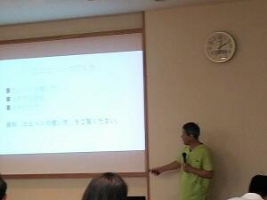
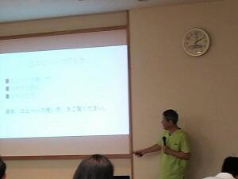 PTA総会 進路講演会
総会後は、全体での「進路講演会」の後、場所を変えて年次別に進路講演会が行われました。進路指導部職員の他、駿台千葉校の講師の方もお招きして、「受験生の保護者として知っておいてもらいたいこと」、「高大接続改革に伴う大学入学共通テストや英語の民間の検定試験などの導入」などについて詳しい説明がありました。


教育プラットフォーム研修（教育支援ソフト研修）

テニス部（女子）関東高等学校テニス大会千葉県予選会ベスト１６
テニス部（女子）が関東高等学校テニス大会千葉県予選会の団体の部でベスト１６
（２年連続）に入りました。４月２８日（日）県総合スポーツセンターテニスコートで行われた大会において、１回戦安房高校に２－０で勝ち、２回戦千葉敬愛高校に０－２で敗退しましたが、２年連続で県大会ベスト１６という成績を残しました。５月３１日に行われる３年生最後の大会になる県総体に向けて、更に練習に励んでいきたいと思います。
将棋部高校将棋選手権千葉県大会で５位に入賞
将棋部が５月６日（月）千葉県教育会館で行われた高校将棋選手権千葉県大会の団体戦、スイス式トーナメント戦５回戦で３勝２敗の成績で県５位に入賞しました。
１１日に行われる個人戦でも上位入賞できるよう頑張りたいと思います。
弓道部女子個人の部県大会優勝
第63回関東高等学校弓道大会千葉県予選会が行われ、女子個人の部で越川優里佳さんが優勝しました。団体予選、個人予選、個人決勝と18連中で上位二人の競射まで駒を進め、最後は24cmの小さな星的に的中させ、見事優勝しました。


ドラードカレッジ（オランダ）来校
離退任式が行われました


対面式が行われました。


新入生へ。部活動を一緒に頑張りましょう。


入学式が挙行されました
続いて校章贈呈式が行われ、本校同窓会鹿山会会長より校章が贈呈されました。
（写真は本校写真部が撮影）
着任式・始業式が行われました
卓球部、書道部の賞状披露も行われました。


平成31年度大学入試結果速報
国公立大学現役合格者は９５名、平成最後に平成最高!!
国立難関１０大学（含む国公立医学科）に１５名が現役合格（平成最高）
現浪合わせても平成最高。国立医学科には浪人生４人が合格
詳細は こちら をご覧ください。
２０２０年度教育実習について
２０２０年度教育実習の申し込み について更新しました。
SGHイギリス海外研修４

SGHイギリス海外研修３

SGHイギリス海外研修２


音楽部第９回定期演奏会

SGHイギリス海外研修
SGH甲子園2019に参加しました。
平成31年3月23日（土）関西学院大学で行われた「SGH甲子園2019」に、本校2年生6名が参加し、課題研究の成果を英語で発表しました。
詳細はこちらを御覧ください。→ SGH甲子園2019での活動
SGHイギリス海外研修へ出発